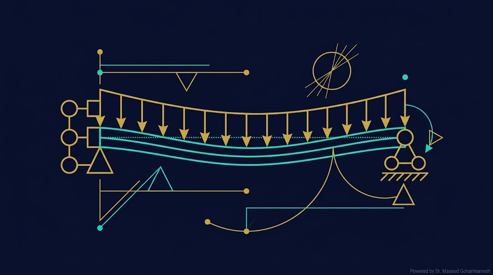
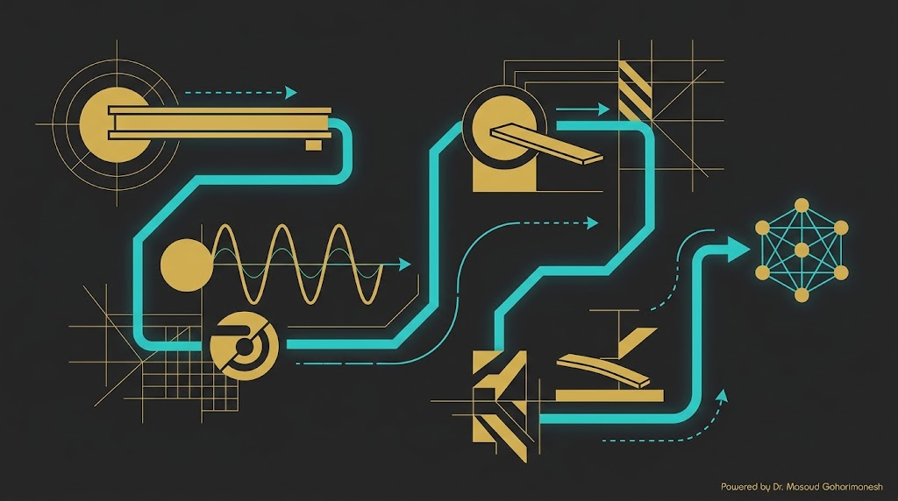
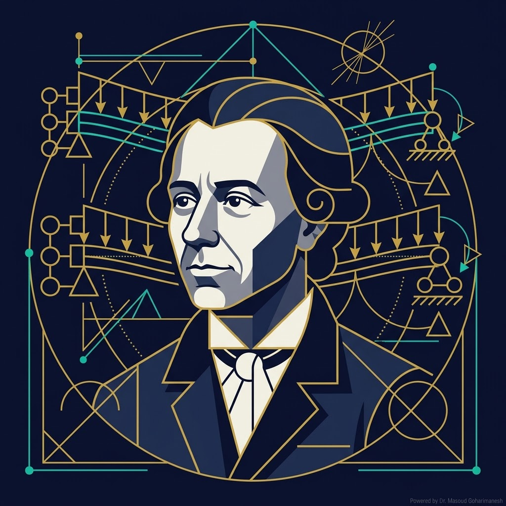
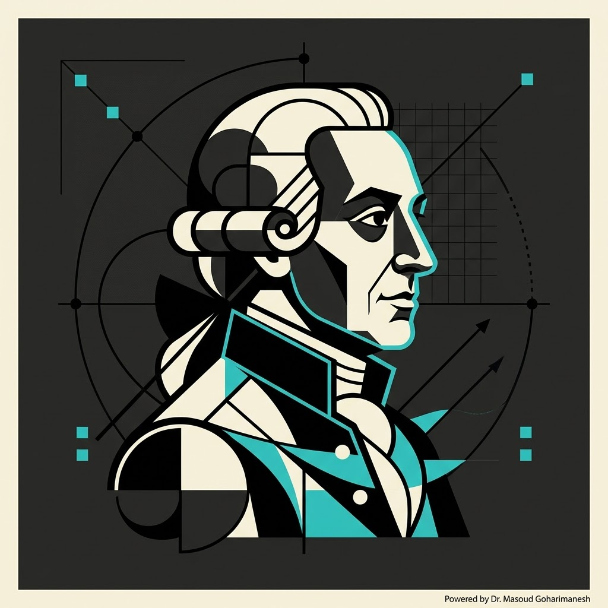
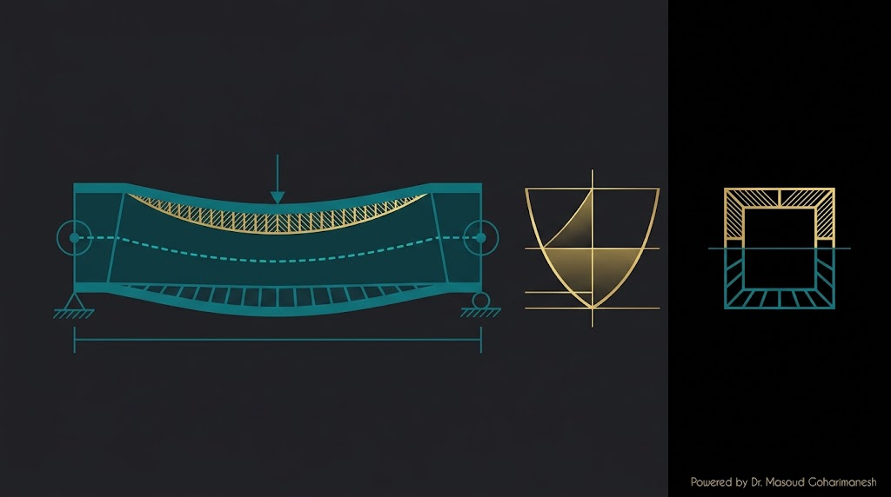
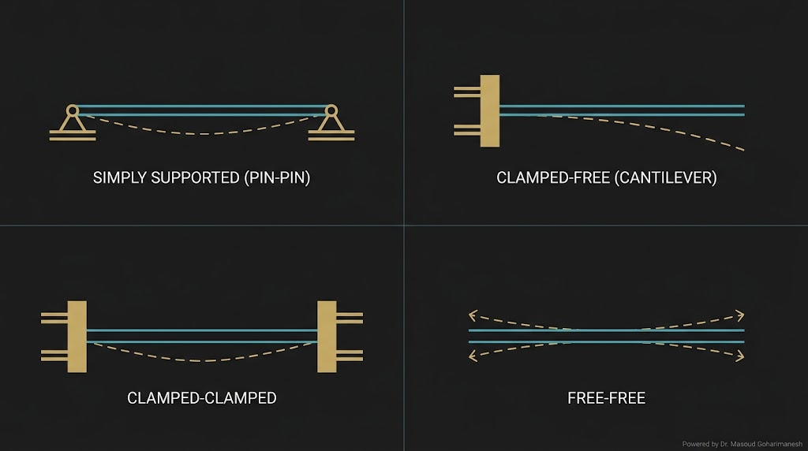
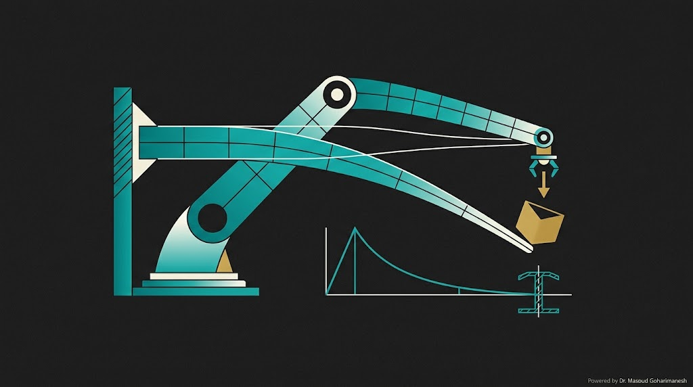
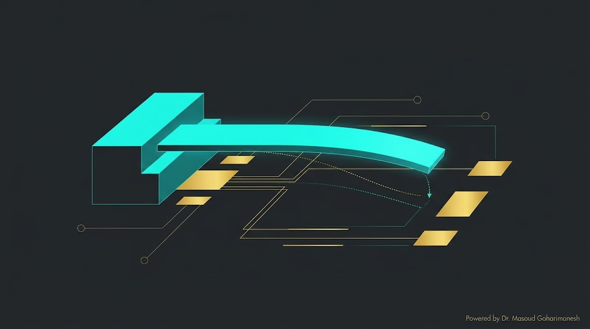
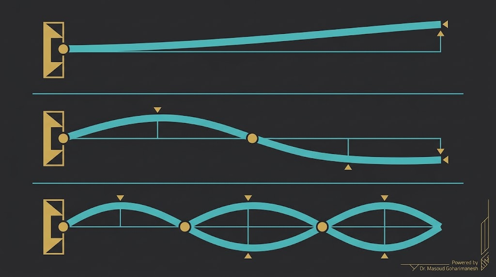
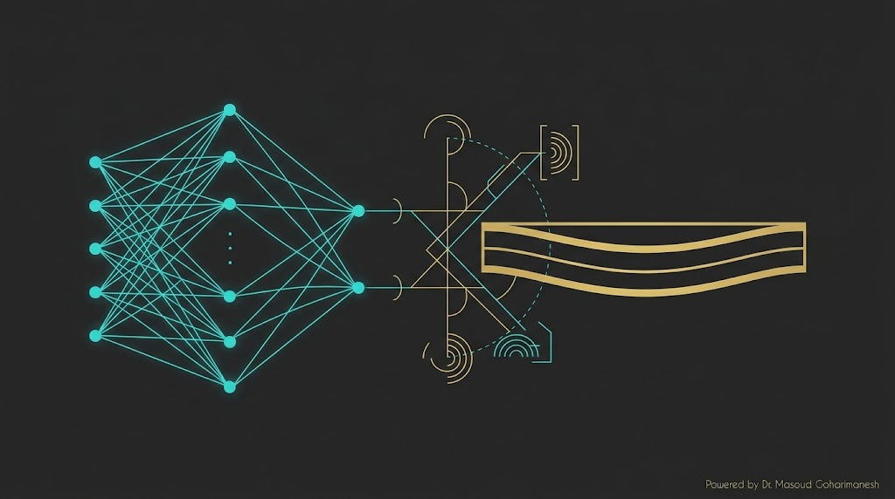

دکتر مسعود گوهری منش
دانشیار گروه مهندسی مکانیک — دانشگاه تربت حیدریه

ریاضیات مهندسی پیشرفته — جلسه ۹ (آغاز فاز ۳)
دکتر مسعود گوهری منش
دانشیار گروه مهندسی مکانیک — دانشگاه تربت حیدریه
تیر، سازه پایهای مکاترونیک است: از بازوی ربات تا نانو انبرک MEMS، همگی با معادله تیر توصیف میشوند. این معادله، یک PDE مرتبه ۴ است — چالشی جدید!


(1707–1783)
ریاضیدان سوئیسی. فرمولبندی ریاضی معادله تیر را در سال ۱۷۵۰ ارائه داد.

(1700–1782)
فیزیکدان سوئیسی. نظریه ریاضی خمش تیر را بر پایه مکانیک ارائه داد.

مقاطع عمود بر محور تیر، پس از خمش، همچنان عمود و مسطح میمانند (no shear deformation). این فرض برای تیرهای نازک ($L/h > 10$) معتبر است.
کرنش محوری متناسب با انحنا:
که $w(x)$ = خمش عمودی، $z$ = فاصله از محور خنثی.
انتگرال تنش روی سطح مقطع:
که $I = \int_A z^2 dA$ = ممان اینرسی سطح مقطع، $EI$ = سختی خمشی.
با ترکیب تعادل نیرو ($dV/dx = -q$) و رابطه $V = dM/dx$:
برای حالت دینامیکی (با اینرسی):
| ویژگی | مرتبه ۲ | مرتبه ۴ (تیر) |
|---|---|---|
| تعداد شرایط مرزی | ۲ | ۴ |
| ثابتهای انتگرال | ۲ | ۴ |
| نوع PDE | سهموی/هذلولوی | بیضوی/دینامیکی |

تیر روی دو تکیهگاه (مثل پل)
یک سر ثابت (مثل بازوی ربات، نانو انبرک)
بدون نیرو و ممان در انتها
اتصال به فنر پیچشی/خطی

تیر یکسر گیردار با طول $L$، یک سر ثابت و سر دیگر آزاد که نیروی $P$ به آن وارد میشود.
شرایط مرزی:
با ۴ بار انتگرالگیری:
جواب نهایی:
جنس، ابعاد، طول و بار را تغییر دهید و تأثیر آنها بر خمش تیر را ببینید.
نکته: خمش با $L^3$ متناسب است — تغییر کوچک در طول، تغییر بزرگ در خمش!

در نانو انبرک تحت نیروی الکترواستاتیک $F_{es} = \frac{\epsilon_0 A V^2}{2(g-w)^2}$:
این یک PDE غیرخطی است — چالشی که در جلسه ۱۱ به آن میپردازیم.

با فرض $w(x,t) = W(x) T(t)$:
با تعریف $\beta^4 = \frac{\rho A \omega^2}{EI}$، جواب مکانی:
با اعمال شرایط مرزی، فرکانسهای بیبعد $\lambda_n = \beta_n L$ از معادله زیر:
سه ریشه اول:
% === حل تیر یکسر گیردار تحت بار انتهایی === clear; clc; close all; L = 1; EI = 1.5; P = 30; N = 100; dx = L / (N-1); x = linspace(0, L, N); % === حل تحلیلی === w_exact = P/(6*EI) * ((x - L).^3 + L^3 - 3*L^2*x); % === حل عددی با تفاضل محدود مرتبه 2 === A = zeros(N, N); b = zeros(N, 1); for i = 1:N if i == 1 A(i, i) = 1; b(i) = 0; elseif i == 2 A(i, i) = -1; A(i, i+1) = 1; b(i) = 0; elseif i == N-1 A(i, i-1) = 1; A(i, i) = -2; A(i, i+1) = 1; b(i) = 0; elseif i == N A(i, i-2) = -1; A(i, i-1) = 2; A(i, i) = -1; b(i) = P/EI * dx^3 * 2; else A(i, i-2) = 1; A(i, i-1) = -4; A(i, i) = 6; A(i, i+1) = -4; A(i, i+2) = 1; end end w = A \ b; % === رسم === figure('Position', [100 100 1000 500]); plot(x, w_exact, 'b-', 'linewidth', 2); hold on; plot(x, w, 'ro', 'markersize', 4); xlabel('x'); ylabel('w(x)'); legend('تحلیلی', 'عددی'); title('حل تیر یکسر گیردار'); grid on;
# === حل تیر یکسر گیردار تحت بار انتهایی === import numpy as np import matplotlib.pyplot as plt L = 1.0; EI = 1.5; P = 30.0 N = 100 dx = L / (N-1) x = np.linspace(0, L, N) # === حل تحلیلی === w_exact = P/(6*EI) * ((x - L)**3 + L**3 - 3*L**2*x) # === ماتریس تفاضل محدود === A = np.zeros((N, N)) b = np.zeros(N) for i in range(N): if i == 0: A[i, i] = 1 elif i == 1: A[i, i] = -1; A[i, i+1] = 1 elif i == N-2: A[i, i-1] = 1; A[i, i] = -2; A[i, i+1] = 1 elif i == N-1: A[i, i-2] = -1; A[i, i-1] = 2; A[i, i] = -1 b[i] = P/EI * dx**3 * 2 else: A[i, i-2] = 1; A[i, i-1] = -4; A[i, i] = 6 A[i, i+1] = -4; A[i, i+2] = 1 w = np.linalg.solve(A, b) plt.figure(figsize=(10, 5)) plt.plot(x, w_exact, 'b-', linewidth=2, label='تحلیلی') plt.plot(x, w, 'ro', markersize=4, label='عددی') plt.xlabel('x'); plt.ylabel('w(x)') plt.legend(); plt.grid(True, alpha=0.3) plt.savefig('beam_solution.png', dpi=600, bbox_inches='tight') plt.show()

در PINN برای معادله تیر، سختی خمشی EI را میتوان بهعنوان پارامتر قابل آموزش در شبکه در نظر گرفت:
$EI$ معلوم، خمش $w(x)$ را پیدا کن.
$EI$ نامعلوم، از دادههای خمش تخمین بزن.
ارسال تمرینها:
m.goharimanesh@gmail.com
Subject الزامی:
[Advanced Engineering Mathematics] HW09 - نام و نام خانوادگی - شماره دانشجویی
$EIw'''' = q$
۴ شرط مرزی
گیردار، ساده، آزاد
نانو انبرک
فرکانسهای طبیعی
تخمین EI
جلسه ۱۰ — ارتعاشات تیر و فرکانسهای طبیعی
با زیبایی ریاضیات همراه باشید 🌟
دکتر مسعود گوهری منش
دانشیار گروه مهندسی مکانیک — دانشگاه تربت حیدریه
جلسه بعد: ارتعاشات تیر و فرکانسهای طبیعی
🇮🇷 با افتخار برای دانشجویان مکاترونیک 🇮🇷